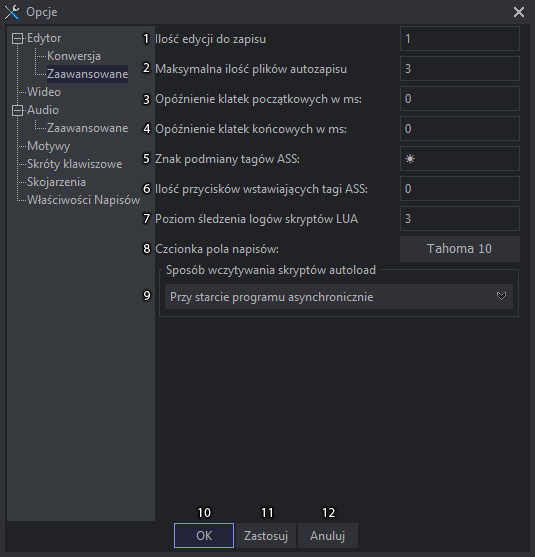

Opcje
Opcje
Jako że ta część programu najczęściej się zmienia, ten temat będzie podzielony na screen plus opis.
Po prawej stronie jest drzewko do wyboru strony.
Edytor
- Język programu, obecnie są dostępne tylko polski i angielski.
- Język sprawdzania pisowni po dodaniu do folderu "Dictionary" nowych języków w formacie .dic i .aff i ponownym włączeniu programu pojawiają się na tej liście. Obecnie tylko z oznaczeniem kodu języka, może kiedyś to zmienię.
- Automatycznie sortuje napisy po wczytaniu.
- Włącza / wyłącza sprawdzanie pisowni.
- Pozwala na zaznaczanie linii z czasem poprzedniej zakładki. Przydatne, gdy porównujemy jakieś napisy, np polski i angielski.
- W polu tekstowym linijki pokazuje sugestie poprawy po dwukrotnym kliknięciu na błąd niezależnie od listy sugestii w menu kontekstowym.
- Otwiera napisy w nowej karcie, gdy aktywna karta ma już wczytane napisy.
- Włącza przechodzenie do nowej linii po wciśnięciu entera, gdy aktywne jest pole czasowe, bądź zostało ono zmodyfikowane.
- Wyłącza pokazywanie edycji na wideo podczas pisania i innych zmian, wymaga ponownego otwarcia zakładki.
- Włącza ustawianie jako aktywnej linii linii widocznej na wideo, gdy jest widocznych kilka linii ustawiana jest pierwsza z nich.
- Włącza przenoszenie wartości pola edycji czasu i time post processora do każdej zmienionej zakładki (przykładowo, gdy zostaje włączony post processor, to po zmienieniu zakładki też zostaje włączony).
- Pole napisów włącza zmienianie aktywnej linijki przy zaznaczaniu każda doznaczona linijka zmienia aktywną linię. Po wyłączeniu tylko kliknięcie, dwukrotne kliknięcie zmienia aktywną linię.
- Po włączeniu w trybie tłumaczenia pokazuje dodatkowo kolumnę oryginału czyli angielskiego tekstu.
- Po zahaczeniu ukrywa na wideo oryginał, czyli po wpisaniu czegokolwiek w tłumaczenie, tekst angielski znika z ekranu.
- Po włączeniu w polach tekstowych można używać skróty numpada "0 - 9".
- Wyłącza ostrzeżenia o tym że linia nie jest widoczna na ekranie czy też jest komentarzem przy korzystaniu z narzędzi edycji wizualnej.
- Po włączeniu okno o niezgodnej rozdzielczości napisów i wideo zostaje wyłączone i w razie, gdy to konieczne należy samemu przekonwertować.
- Włącza kompatybilność ze starymi skryptami Lua w przypadku, gdy wyskakuje błąd: "attempt to index global 'kainote' (a nil value).
- Zatwierdza zmiany, zamyka okno.
- Zatwierdza zmiany, okno pozostaje bez zmian.
- Anuluje zmiany i zamyka okno.
Edytor konwersja

- Katalog menedżera stylów użyty do wyboru stylu przy konwersji do formatu ASS.
- Styl magazynu (1) użyty do wyboru stylu przy konwersji do formatu ASS.
- Liczba klatek na sekundę użyta do konwersji na MDVD i z niej.
- Po zahaczeniu bierze FPS wideo zamiast z pola (3).
- Ustawia nowe czasy końcowe przy konwersji. Dobre w przypadku, gdy wcześniejsze były źle wygenerowane i znikały w środku wypowiedzi.
- Po włączeniu wyświetla to okno przed konwersją.
- Czas ja jeden znak potrzebne do obliczenia nowych czasów końcowych.
- Rozdzielczość, która zostaje ustawiona przy konwersji do formatu ASS.
- Tagi wstawiane na początku każdej linijki przy konwersji do formatu ASS.
- Zatwierdza zmiany, zamyka okno.
- Zatwierdza zmiany, okno pozostaje bez zmian.
- Anuluje zmiany i zamyka okno.
Edytor zaawansowane

- Pozwala ustawić ilość edycji, po której zostaje dokonany zapis do pola napisów (nie mylić z zapisem na dysk). Domyślna wartość wynosi 1 czyli zapisuje po każdej edycji. Zero całkowicie wyłącza zapis do pola napisów, tylko potwierdzenie enterem albo control + enter zapisuje.
- Maksymalna ilość plików autozapisu przechowywanych w folderze Subs. Minimalna wartość 2 ponieważ w niektórych przypadkach w pliku może brakować części linijek gdy program zostanie zamknięty z powodu crasha.
- Pozwala ustawiać przyspieszenie do ustawiania czasu startowego z wideo, tak by uwzględnić czas reakcji. Dobre w przypadku robienia zgrubnego timingu.
- to samo co w polu (3) tylko ustawia przyspieszenie dla czasu końcowego. (wpisany czas jest odejmowany).
- Znak podmiany tagów w polu napisów.
- Daje możliwość ustawienia ilości przycisków do wstawiania tagów ASS albo nawet zwykłego tekstu. Jako że w polu edycji napisów zostało to dodane bezpośrednio, ta opcja jest już praktycznie niepotrzebna.
- Poziom śledzenia logów Lua domyślnie 3 co znaczy, że w skryptach Lua logi z poziomem śledzenia wyższym niż 3 są niewyświetlane. Maksymalny poziom to 5, wtedy wyświetla wszystkie logi nawet te typowo informacyjne.
- Czcionka pola napisów, domyślnie Tahoma 10. Pole tekstowe edycji linijki obecnie nie ma zmiany czcionki ale za to ma zmianę wielkości na control+rolka myszy.
- Wczytywanie skryptów Lua, jako że skrypty Depencency Control wczytują się dość długo dałem wczytywanie asynchroniczne przy starcie jako domyślne by program nie uruchamiał się pół minuty. Jednakże jest do wyboru jeszcze wraz z programem, a także asynchronicznie i synchronicznie po otwarciu menu. W przypadku synchronicznego otwierania z menu program zamiera na 10-15 sekund więc nie jest ono wskazane.
- Zatwierdza zmiany, zamyka okno.
- Zatwierdza zmiany, okno pozostaje bez zmian.
- Anuluje zmiany i zamyka okno.
Wideo
- Po dwukrotnym kliknięciu na wideo bądź daniu otwórz za pomocą otwiera wideo od razu na pełnym ekranie, działa tylko z Direct Show.
- Po włączeniu kliknięcie na wideo pauzuje je bądź włącza odtwarzanie ponownie.
- Ustawia wideo w pozycji czasu startowego aktywnej linii.
- Preferowane ścieżki audio np. jpn;eng;pol; wymaga użycia kodu 3-znakowego.
- Sposób szukania wideo przez FFMS2. Liniowe - bardzo wolne, Normalne - w miarę szybkie, Niebezpieczne - szybkie w każdym przypadku, Agresywne - szybkie przy cofaniu ale robi spore zmuły przy szukaniu podczas odtwarzania, najlepiej nie używać.
- Zatwierdza zmiany, zamyka okno.
- Zatwierdza zmiany, okno pozostaje bez zmian.
- Anuluje zmiany i zamyka okno.
Audio
- Wyświetla czas przy kursorze, gdy pojawia się pod strzałką myszy na wykresie audio.
- Wyświetla znaczniki sekund oznaczone przerywanymi liniami.
- Wyświetla tło aktywnej linijki na wykresie audio.
- Wyświetla przerywaną linię wskazującą pozycję wideo na wykresie audio.
- Wyświetla klatki kluczowe na wykresie audio.
- Przewija wykres audio przy odtwarzaniu samego audio bądź odtwarzania wideo i audio.
- Uaktywnia wykres po najechaniu na niego myszą, jako że samo kliknięcie powoduje przestawienie znacznika linii startowej. Wyłączenie tej opcji sprawia, że praca na wykresie audio staje się uciążliwa.
- Przykleja do klatek kluczowych, by łatwiej było ustawić linię startu i końca w tej pozycji, linii karaoke to nie dotyczy bo to byłoby raczej niewskazane.
- Przykleja do czasów start i koniec poprzedniej i następnej linii.
- Przy autopodziale karaoke scala wszystkie n z poprzednią sylabą, by było bardziej czytelne dla osób, które nie są Japończykami.
- Na aktywnej sylabie i następnej pozwala na klikanie w wykres, by bezpośrednio przestawiać linie czasu sylab. Po przyzwyczajeniu przyspiesza tworzenie podziału karaoke.
- Włącza wczytywanie audio do pamięci RAM. Domyślnie wczytuje na dysk co przyspiesza wczytywanie za drugim razem, ale działanie wykresu jest wolniejsze. Przy małej ilości pamięci w komputerze nie wskazane jest używanie tej opcji, film półtoragodzinny może zajmować 1GB pamięci.
- Zatwierdza zmiany, zamyka okno.
- Zatwierdza zmiany, okno pozostaje bez zmian.
- Anuluje zmiany i zamyka okno.
Audio zaawansowane
- W przypadku, gdy wideo i audio nie są ze sobą zsynchronizowane można tą opcją poprawić ręcznie synchronizację. Można używać wartości ujemnych.
- Ustawia czas odsłuchu przed i po znaczniku audio ustawianego na wykresie do przesuwania czasów (więcej informacji na ten temat w temacie przesuwanie czasu napisów).
- Czas wstępu ustawianego za pomocą przycisku wykresu audio wstaw wstęp.
- Czas zakończenia ustawianego za pomocą przycisku wykresu audio wstaw zakończenie.
- Grubość linii startowych i końcowych aktywnego dialogu i nieaktywnych widocznych na wykresie audio.
- limit plików audio cache oczywiście w przypadku gdy otwartych jest 20 zakładek to i tak będzie 20 plików, ale przy otwarciu 5 liczba zostanie zredukowana do tego limitu.
- Sposób wyświetlania nieaktywnych linijek na wykresie audio. Do wyboru: brak wyświetlania, przed i po aktywnej, a także wszystkie widoczne.
- Zatwierdza zmiany, zamyka okno.
- Zatwierdza zmiany, okno pozostaje bez zmian.
- Anuluje zmiany i zamyka okno.
Motywy
- Lista motywów wyświetla wszystkie zainstalowane motywy.
- Pole tekstowe do wpisywania nazwy kopii motywu. Gdy chcemy stworzyć własny motyw należy go skopiować z otworzonego motywu. Wystarczy wpisać nazwę i kliknąć przycisk "Kopiuj".
- Lista z kolorami z możliwością edycji (opisy koloru). Uwaga! Domyślnych motywów DarkSentro i LightSentro nie można edytować, należy je skopiować.
- Kolumna z kolorami z możliwością edycji, dwukrotne kliknięcie otwiera okno wyboru koloru. Można też używać menu, klikając prawym przyciskiem, by kopiować i wklejać bezpośrednio. W przyszłości zamierzam zrobić opis do czego jest dany kolor. Tak, by było pokazane to na screenie.
- Zatwierdza zmiany, zamyka okno.
- Zatwierdza zmiany, okno pozostaje bez zmian.
- Anuluje zmiany i zamyka okno.
Skróty klawiszowe
- Filtrowanie skrótów klawiszowych, dzieli się na:
- Wszystko
- Ustawione skróty
- Skróty globalne
- Skróty napisów
- Skróty edytora
- Skróty wideo
- Skróty audio
służy to do zmniejszenia długiej listy i wyświetlenia tylko żądanych w danym momencie pozycji.
- Lista skrótów klawiszowych (opis funkcji).
- Skrót klawiszowy, który można zmapować, klikając dwukrotnie na skrót, bądź zaznaczając skrót i klikając przycisk (4) mapuj skrót.
- Przycisk do mapowania skrótów po uprzednim wybraniu skrótu do zmapowania.
- Przycisk do przywracania skrótu domyślnego.
- Przycisk do usuwania skrótów.
- Zatwierdza zmiany, zamyka okno.
- Zatwierdza zmiany, okno pozostaje bez zmian.
- Anuluje zmiany i zamyka okno.
Skojarzenia
- Lista wszystkich skojarzeń.
- Zahacza wszystkie skojarzenia.
- Zahacza skojarzenia napisów.
- Zahacza skojarzenia wideo.
- Odznacza wszystko.
- Zatwierdza zmiany, zamyka okno.
- Zatwierdza zmiany, okno pozostaje bez zmian.
- Anuluje zmiany i zamyka okno.
Właściwości napisów
Pozwala automatycznie zmieniać właściwości napisów na wpisane w pola tekstowe.
- Po zahaczeniu zmienia automatycznie pole tytułu przy zapisie napisów.
- Po zahaczeniu zmienia automatycznie pole autora przy zapisie napisów.
- Po zahaczeniu zmienia automatycznie pole tłumaczenia przy zapisie napisów.
- Po zahaczeniu zmienia automatycznie pole korekty przy zapisie napisów.
- Po zahaczeniu zmienia automatycznie pole timingu przy zapisie napisów.
- Po zahaczeniu zmienia automatycznie pole edycji przy zapisie napisów.
- Pyta o zmianę informacji przed każdym zapisem.
- Zatwierdza zmiany, zamyka okno.
- Zatwierdza zmiany, okno pozostaje bez zmian.
- Anuluje zmiany i zamyka okno.
Created with the Personal Edition of HelpNDoc: Easily create CHM Help documents